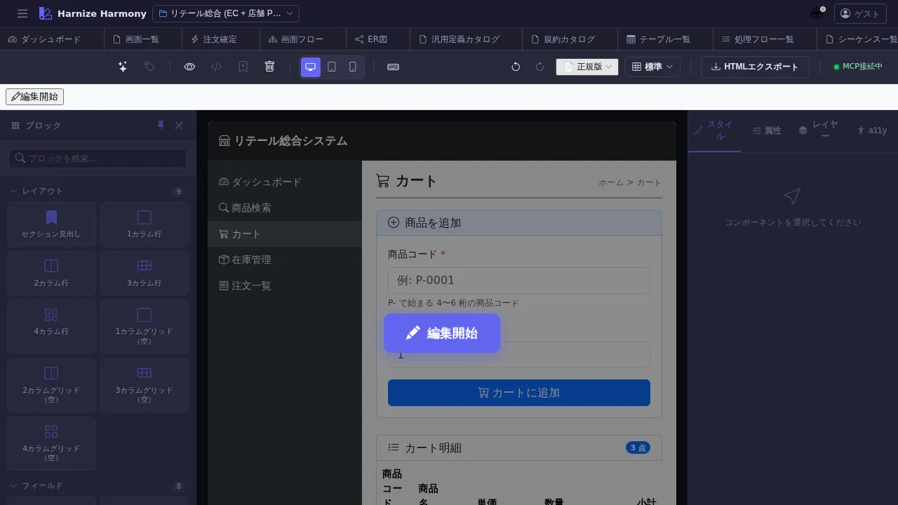

画面デザイナー
対象画面:
Designer(frontend/src/components/Designer.tsx、ResourceLoadingでラップ) ルート:/w/:wsId/screen/design/:screenId種別: マルチインスタンスタブ (リソース ID 毎)
概要
Screen の ビジュアル編集 を行う画面。GrapesJS (デフォルト) または Puck の 2 エディタを使い分け、画面の HTML 構造 + Bootstrap / Tailwind スタイルを WYSIWYG で組み立てる。60+ pre-built block (frontend/src/grapes/blocks.ts) + プロジェクト固有のカスタムブロックを使える。
到達経路
- 画面一覧 (
/screen/list) → カード / 行 ダブルクリック - 画面フロー (
/screen/flow) → node ダブルクリック - 直接 URL:
/w/<wsId>/screen/design/<screenId>
画面構成

主要エリア
- EditorHeader — Screen 名 / 編集モード切替 / 保存 / id 変更 / theme 切替 / Puck⇔GrapesJS 切替
- 左サイドバー (Block Manager) — Bootstrap / 業務 / カスタムブロックのパレット
- 中央 Canvas (iframe) — WYSIWYG プレビュー、ドラッグ&ドロップで配置
- 右サイドバー (Style Manager / Settings) — 選択中要素の CSS / 属性 / コンポーネント設定
- 下部 Layer Tree — 配置済要素の階層構造、選択 / 再順序
主要操作
| 操作 | 手段 | 結果 |
|---|---|---|
| Block 配置 | 左パレット → Canvas にドラッグ | 要素挿入、autosave で workspace の screens/{id}.design.json に永続化 |
| 要素選択 | Canvas または Layer Tree でクリック | 右サイドバーが該当要素の設定に切替 |
| スタイル変更 | 右 Style Manager で CSS 編集 | inline style として書込み |
| theme 切替 | EditorHeader → Theme dropdown | standard / card / compact / dark の CSS 切替 |
| editor 切替 | EditorHeader → editorKind dropdown | GrapesJS ⇔ Puck (同 Screen を両エディタで開ける、選択値が project default 上書き) |
| マーカー追加 | Canvas 上で右クリック → 「マーカー」 | /designer-work で AI 指示として処理可 |
| カスタムブロック保存 | 左パレット → 選択要素を「Block にコピー」 | custom-blocks.json に保存、再利用可 |
| 保存 | Ctrl+S or autosave | edit-session 経由でサーバ反映 |
データ前提
- 空画面: Canvas が真っ白、左の Block Manager から要素をドラッグして組み立て
- 意味のある画面: retail の
cart等は Bootstrap ベースの商品カート画面が既に配置されている
関連仕様書
docs/spec/multi-editor-puck.md— Puck/GrapesJS 共存仕様 (#806)docs/user-guide/multi-editor-puck-guide.md— Puck/GrapesJS 使い分けガイドdocs/spec/css-framework-switching.md— Bootstrap/Tailwind 切替
関連 skill
/designer-work <processFlowId>— マーカー (Canvas 上の指示書き) を Claude Code が読んで処理フローを編集/rename-screen-ids— Canvas 内 input/button の自動採番 id を業務名にリネーム
既知の制約・注意
- iframe Canvas は a11y tree に出ない — 本マニュアルの screenshot だけでは内部要素を読めない、実機で操作必須
- WebSocket 切断時は localStorage fallback (
gjs-screen-{id})、復帰後 sync (docs/spec/workspace.md参照) - GrapesJS / Puck の切替時は 未保存変更があると確認ダイアログ
purpose='gadget'のガジェット編集も同 Designer を使う (viewport だけ小さくなる)